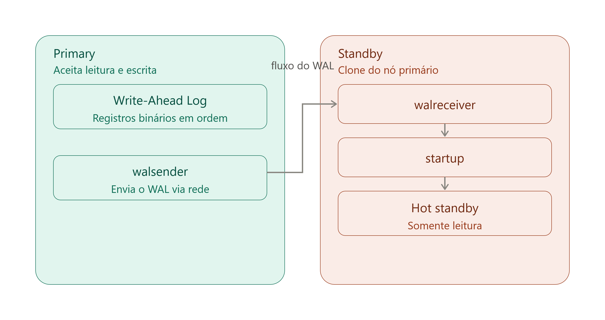
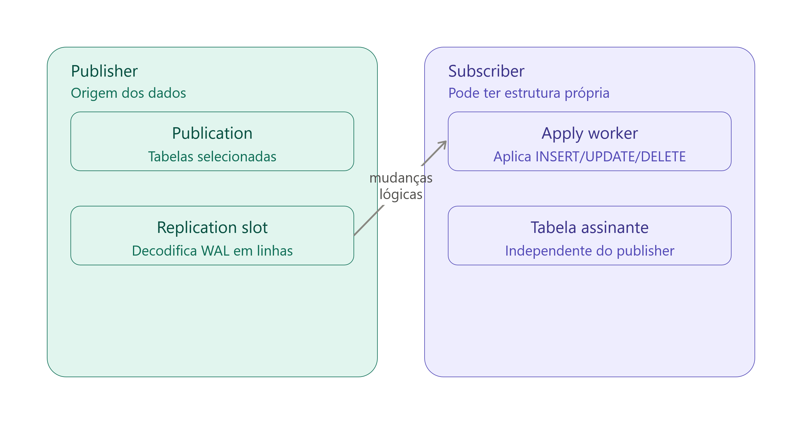
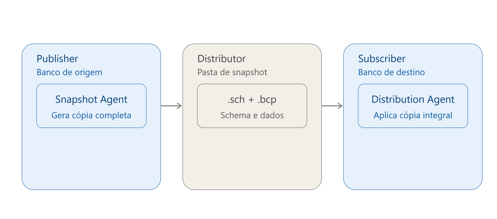
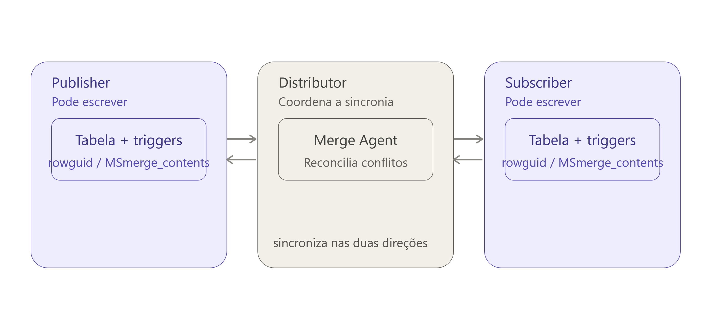
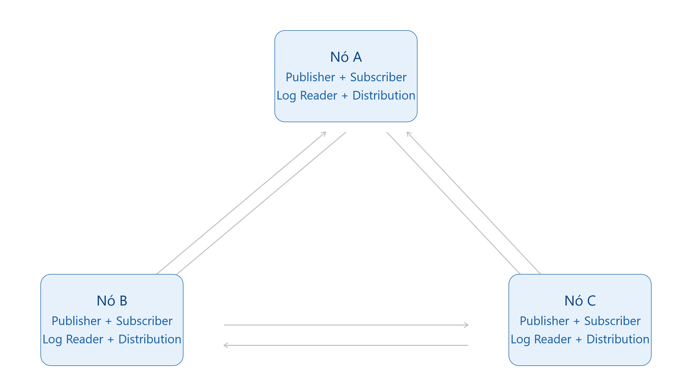

Replicação: SQL Server x PostgreSQL
Este artigo descreve um dos pilares mais fundamentais da infraestrutura de dados moderna: a replicação. Seja para garantir Alta Disponibilidade (HA/DR), aliviar o nó transacional via Read Scale-Out ou isolar cargas de trabalho analíticas (OLAP), entender como os motores transmitem transações pela rede é vital para a carreira de um DBA/DBRE.
Sabendo disso, vamos começar pelo ecossistema do PostgreSQL e seus dois modelos nativos:
No Postgres, a replicação evoluiu drasticamente e hoje se divide em duas grandes categorias bem definidas: a replicação Física e a replicação Lógica. Ambas cumprem papéis excelentes, mas trabalham com paradigmas completamente diferentes sob o capô.
1. Replicação Física (Streaming Replication)
A replicação física atua a nível de blocos de disco. O servidor principal (Primary) envia os registros binários do seu arquivo de log (o WAL) byte a byte, na exata ordem cronológica, para um ou mais servidores secundários (Standbys).
Fisicamente, a réplica é um clone idêntico do nó primário. O processo funciona através de engrenagens bem coordenadas: o nó principal possui o processo walsender, que empurra o fluxo do WAL via rede para o processo walreceiver na réplica. A partir dali, o processo startup aplica essas mudanças diretamente nos arquivos de dados do nó secundário (Hot Standby), que fica aberto exclusivamente para consultas de leitura.

Esse modelo pode rodar em modo Assíncrono (onde o Primary confirma o COMMIT sem esperar a réplica, gerando um risco mínimo de lag) ou Síncrono (onde o Primary segura o COMMIT até a réplica confirmar a gravação no WAL, priorizando consistência total sobre a latência de rede).
2. Replicação Lógica (Logical Replication)
Introduzida na versão 10, a replicação lógica abandona os blocos físicos de disco e adota o modelo de Publicação e Subscrição (Publish-Subscribe) baseado na identidade das linhas das tabelas.
O nó de origem decodifica o WAL binário em comandos lógicos estruturados (ex: "Inserir ID 5 na tabela Clientes"). Isso traz uma granularidade fantástica: você pode optar por replicar apenas tabelas específicas, consolidar dados de múltiplos servidores em um único Data Warehouse analítico, ou realizar upgrades de versão do banco de dados com praticamente zero de downtime, já que ela aceita tráfego entre versões diferentes do Postgres.

Fato curioso: Ao contrário do standby físico que é estritamente travado como Read-Only, o banco que assina uma replicação lógica aceita escritas locais e permite a execução de triggers customizadas durante a inserção dos dados replicados.
Após o overview do Postgres, podemos partir para o modelo tradicional do SQL Server:
Aqui precisamos desmistificar um ponto crucial. No SQL Server, o termo "Replicação" refere-se a uma tecnologia de distribuição de objetos lógicos baseados em uma subdivisão (Publisher, Distributor e Subscriber) gerenciada via SQL Server Agent. Ela não deve ser confundida com soluções puras de infraestrutura e HADR (como o AlwaysOn Availability Groups).
A Replicação Transacional (Transactional Replication)
É o modelo incremental em tempo real mais utilizado para Read Scale-Out. O mecanismo funciona em três etapas fundamentais:
- Publisher (Editor): O banco de dados de produção que disponibiliza as tabelas (chamadas de artigos) agrupadas em uma publicação.
- Distributor (Distribuidor): O coração do fluxo. Possui uma base de sistema própria chamada
distributionque armazena temporariamente os comandos antes do envio final. - Subscriber (Assinante): O banco de destino que recebe e consolida as transações.
Sob o capô, o agente Log Reader Agent escaneia o arquivo de log (.ldf) do Publisher em busca de alterações nos artigos publicados. Ao encontrá-las, ele move os comandos para o Distribuidor. Em seguida, o Distribution Agent assume a tarefa de descarregar e executar essas transações cronologicamente no Subscriber.
Diferença Crítica: Enquanto a Replicação Transacional distribui objetos lógicos de forma customizável (permitindo índices diferentes no destino), o AlwaysOn AG atua de forma física, transmitindo blocos de log de transações inteiros para manter réplicas idênticas a nível de banco de dados para failover.
Os outros modelos de replicação do SQL Server
A Replicação Transacional é o modelo mais popular, mas está longe de ser o único. O SQL Server oferece mais três variações, cada uma resolvendo um problema de topologia diferente: dados que mudam pouco, dispositivos que ficam offline, e escrita distribuída geograficamente.
Replicação Snapshot (Snapshot Replication)
É o modelo mais simples de todos e, na prática, serve de base para inicializar os outros dois (toda publicação de Merge ou Transacional começa com um snapshot inicial). Diferente da Transacional, ela não monitora o log de transações continuamente — não existe granularidade incremental.
O agente responsável é o Snapshot Agent, que gera periodicamente uma cópia completa do esquema e dos dados dos artigos publicados, salvando arquivos .sch (schema) e .bcp (dados, via bulk copy) na pasta de snapshot do Distribuidor. O Distribution Agent então aplica essa cópia inteira no Subscriber, substituindo a versão anterior.

Por não gerar tráfego contínuo, é ideal para tabelas de baixa volatilidade (tabelas de domínio, catálogos de produtos) ou cenários onde uma janela de atualização diária/semanal é aceitável.
Replicação de Merge (Merge Replication)
Aqui a via deixa de ser única. A Replicação de Merge permite que tanto o Publisher quanto os Subscribers façam alterações independentes nos mesmos dados — inclusive offline — e sincronizem tudo posteriormente. É o modelo clássico para força de campo (vendedores, técnicos) que trabalham desconectados e sincronizam ao voltar à rede.
O mecanismo depende de triggers automáticas instaladas em cada tabela publicada, que registram toda alteração em tabelas de rastreamento do sistema (MSmerge_contents e MSmerge_tombstone), identificando cada linha por uma coluna rowguid exclusiva. O Merge Agent é quem varre essas tabelas de rastreamento em ambos os nós e aplica as mudanças pendentes nas duas direções.

Fato curioso: Como duas pontas podem alterar a mesma linha simultaneamente enquanto offline, o Merge precisa de um resolvedor de conflitos. Por padrão, o SQL Server usa resolução por prioridade (a alteração do nó com maior priority number vence), mas é possível programar resolvedores customizados via COM ou .NET para regras de negócio específicas.
Peer-to-Peer Replication
É uma variação da Replicação Transacional pensada para topologias multi-master: em vez de um único Publisher, todos os nós participantes são simultaneamente Publisher e Subscriber uns dos outros. Cada nó roda seu próprio Log Reader Agent e Distribution Agent, propagando as transações para todos os outros nós da malha.
O objetivo aqui não é tolerância a conflitos (o SQL Server não resolve conflitos automaticamente nesse modelo), mas sim disponibilidade de escrita distribuída geograficamente — cada região grava localmente e replica para as demais, geralmente com particionamento lógico de dados por nó para evitar que duas pontas escrevam a mesma linha.

Regra de ouro: escolha o modelo pela natureza do dado, não pela familiaridade com a ferramenta. Dado que muda pouco e tolera atraso → Snapshot. Dado que precisa ser editado offline e reconciliado depois → Merge. Escrita distribuída sem overlap de linhas entre regiões → Peer-to-Peer. Leitura em tempo real a partir de uma única fonte de verdade → Transacional.
Queries essenciais de monitoramento para o dia a dia
Para mitigar esses incidentes, o monitoramento preventivo do lag e dos estados de retenção é obrigatório. Seguem os comandos práticos de partida:
Para o PostgreSQL: Monitorando o Lag de replicação e Slots retidos
Esta consulta calcula a diferença em bytes entre o LSN atual gravado no Primário e o que já foi processado e retransmitido para os standbys através do processo de streaming:
SELECT client_addr AS ip_replica,
state,
pg_wal_lsn_diff(pg_current_wal_lsn(), sent_lsn) AS sent_lag_bytes,
pg_wal_lsn_diff(sent_lsn, write_lsn) AS write_lag_bytes,
pg_wal_lsn_diff(write_lsn, flush_lsn) AS flush_lag_bytes,
pg_wal_lsn_diff(flush_lsn, replay_lsn) AS replay_lag_bytes
FROM pg_stat_replication;Para auditar o impacto imediato dos slots de replicação ativos e o volume acumulado em disco que eles estão forçando o cluster a manter:
SELECT slot_name,
slot_type,
active,
pg_size_pretty(pg_wal_lsn_diff(pg_current_wal_lsn(), restart_lsn)) AS espaco_retido_wal
FROM pg_replication_slots;Para o SQL Server: Monitorando ofensores de retenção no Log
Caso o log transacional de produção apresente crescimento incomum, execute a seguinte query de diagnóstico para avaliar se a Replicação ou o AlwaysOn estão impedindo a reciclagem do arquivo:
SELECT name AS DatabaseName,
recovery_model_desc AS RecoveryModel,
log_reuse_wait_desc AS MotivoRetencaoLog
FROM sys.databases
WHERE log_reuse_wait_desc IN ('REPLICATION', 'AVAILABILITY_GROUP');Se o resultado retornar REPLICATION, significa que existem transações travadas no log que o Log Reader Agent ainda não conseguiu ler ou enviar para o banco de distribuição. Você pode complementar a investigação executando o comando DBCC OPENTRAN; para identificar o ID da transação mais antiga que está segurando o ponteiro ativo do arquivo.
Essas são as engrenagens e armadilhas principais dos mecanismos de replicação. Compreender o comportamento físico desses dados transitando pela rede é o diferencial estratégico para garantir ambientes analíticos e transacionais escaláveis e resilientes. Obrigado por ler até aqui e bons estudos!